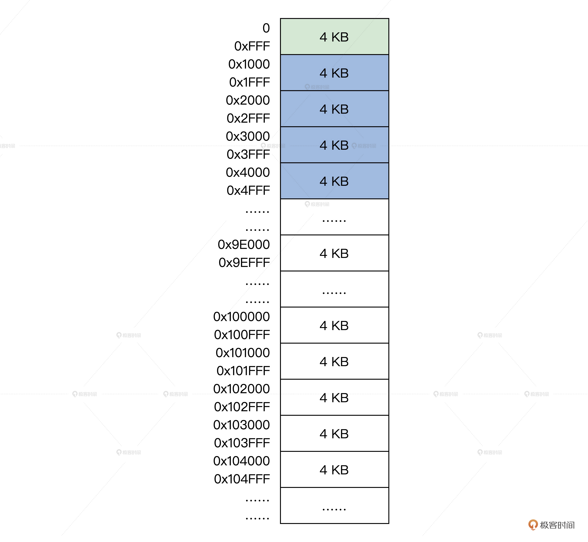
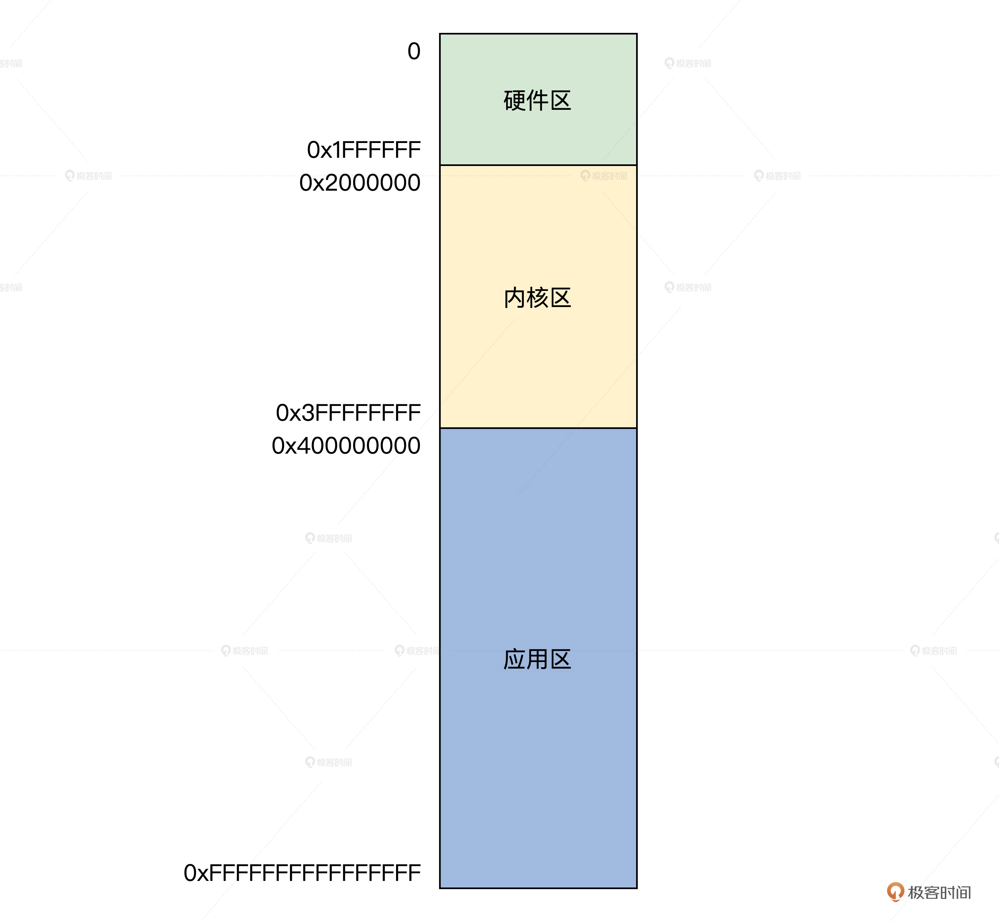
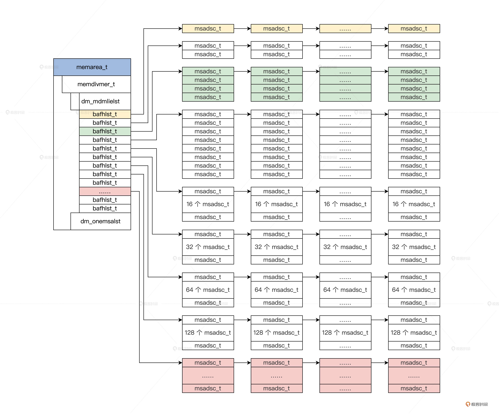

- 00 开篇词 为什么要学写一个操作系统？.md
- 00 编辑手记 升级认知，迭代自己的操作系统.md
- 01 程序的运行过程：从代码到机器运行.md
- 02 几行汇编几行C：实现一个最简单的内核.md
- 03 黑盒之中有什么：内核结构与设计.md
- 04 震撼的Linux全景图：业界成熟的内核架构长什么样？.md
- 05 CPU工作模式：执行程序的三种模式.md
- 06 虚幻与真实：程序中的地址如何转换？.md
- 07 Cache与内存：程序放在哪儿？.md
- 08 锁：并发操作中，解决数据同步的四种方法.md
- 09 瞧一瞧Linux：Linux的自旋锁和信号量如何实现？.md
- 10 设置工作模式与环境（上）：建立计算机.md
- 11 设置工作模式与环境（中）：建造二级引导器.md
- 12 设置工作模式与环境（下）：探查和收集信息.md
- 13 第一个C函数：如何实现板级初始化？.md
- 14 Linux初始化（上）：GRUB与vmlinuz的结构.md
- 15 Linux初始化（下）：从_start到第一个进程.md
- 16 划分土地（上）：如何划分与组织内存？.md
- 17 划分土地（中）：如何实现内存页面初始化？.md
- 18 划分土地（下）：如何实现内存页的分配与释放？.md
- 19 土地不能浪费：如何管理内存对象？.md
- 20 土地需求扩大与保障：如何表示虚拟内存？.md
- 21 土地需求扩大与保障：如何分配和释放虚拟内存？.md
- 22 瞧一瞧Linux：伙伴系统如何分配内存？.md
- 23 瞧一瞧Linux：SLAB如何分配内存？.md
- 24 活动的描述：到底什么是进程？.md
- 25 多个活动要安排（上）：多进程如何调度？.md
- 26 多个活动要安排（下）：如何实现进程的等待与唤醒机制？.md
- 27 瞧一瞧Linux：Linux如何实现进程与进程调度_.md
- 28 部门分类：如何表示设备类型与设备驱动？.md
- 29 部门建立：如何在内核中注册设备？.md
- 30 部门响应：设备如何处理内核I_O包？.md
- 31 瞧一瞧Linux：如何获取所有设备信息？.md
- 32 仓库结构：如何组织文件_.md
- 33 仓库划分：文件系统的格式化操作.md
- 34 仓库管理：如何实现文件的六大基本操作？.md
- 35 瞧一瞧Linux：虚拟文件系统如何管理文件？.md
- 36 从URL到网卡：如何全局观察网络数据流动？.md
- 37 从内核到应用：网络数据在内核中如何流转.md
- 38 从单排到团战：详解操作系统的宏观网络架构.md
- 39 瞧一瞧Linux：详解socket实现与网络编程接口.md
- 40 瞧一瞧Linux：详解socket的接口实现.md
- 41 服务接口：如何搭建沟通桥梁？.md
- 42 瞧一瞧Linux：如何实现系统API？.md
- 43 虚拟机内核：KVM是什么？.md
- 44 容器：如何理解容器的实现机制？.md
- 45 ARM新宠：苹果的M1芯片因何而快？.md
- 46 AArch64体系：ARM最新编程架构模型剖析.md
- LMOS来信：第二季课程带你“手撕”计算机基础.md
- 大咖助场 以无法为有法，以无限为有限.md
- 用户故事 yiyang：我的上机实验“爬坑指南”.md
- 用户故事 成为面向“知识库”的工程师.md
- 用户故事 技术人如何做选择，路才越走越宽？.md
- 用户故事 操作系统发烧友：看不懂？因为你没动手.md
- 用户故事 用好动态调试，助力课程学习.md
- 用户故事 艾同学：路虽远，行则将至.md
- 结束语 生活可以一地鸡毛，但操作系统却是心中的光.md
16 划分土地（上）：如何划分与组织内存？
你好，我是LMOS。
内存跟操作系统的关系，就像土地和政府的关系一样。政府必须合理规划这个国家的土地，才能让人民安居乐业。为了发展，政府还要进而建立工厂、学校，发展工业和教育，规划城镇，国家才能繁荣富强。
而作为计算机的实际掌权者，操作系统必须科学合理地管理好内存，应用程序才能高效稳定地运行。
内存管理是一项复杂的工作，我会用三节课带你搞定它。
具体我是这么安排的：这节课，我们先解决内存的划分方式和内存页的表示、组织问题，设计好数据结构。下一节课，我会带你在内存中建立数据结构对应的实例变量，搞定内存页的初始化问题。最后一节课，我们会依赖前面建好的数据结构，实现内存页面管理算法。
好，今天我们先从内存的划分单位讲起，一步步为内存管理工作做好准备。
今天课程的配套代码，你可以点击这里，自行下载。
分段还是分页
要划分内存，我们就要先确定划分的单位是按段还是按页，就像你划分土地要选择按亩还是按平方分割一样。
其实分段与分页的优缺点，前面MMU相关的课程已经介绍过了。这里我们从内存管理角度，理一理分段与分页的问题。
第一点，从表示方式和状态确定角度考虑。段的长度大小不一，用什么数据结构表示一个段，如何确定一个段已经分配还是空闲呢？而页的大小固定，我们只需用位图就能表示页的分配与释放。
比方说，位图中第1位为1，表示第一个页已经分配；位图中第2位为0，表示第二个页是空闲，每个页的开始地址和大小都是固定的。
第二点，从内存碎片的利用看，由于段的长度大小不一，更容易产生内存碎片，例如内存中有A段（内存地址：0～5000）、 B段（内存地址：5001～8000）、C段（内存地址：8001～9000），这时释放了B段，然后需要给D段分配内存空间，且D段长度为5000。
你立马就会发现A段和C段之间的空间（B段）不能满足，只能从C段之后的内存空间开始分配，随着程序运行，这些情况会越来越多。段与段之间存在着不大不小的空闲空间，内存总的空闲空间很多，但是放不下一个新段。
而页的大小固定，分配最小单位是页，页也会产生碎片，比如我需要请求分配4个页，但在内存中从第1～3个页是空闲的，第4个页是分配出去了，第5个页是空闲的。这种情况下，我们通过修改页表的方式，就能让连续的虚拟页面映射到非连续的物理页面。
第三点，从内存和硬盘的数据交换效率考虑，当内存不足时，操作系统希望把内存中的一部分数据写回硬盘，来释放内存。这就涉及到内存和硬盘交换数据，交换单位是段还是页？
如果是段的话，其大小不一，A段有50MB，B段有1KB，A、B段写回硬盘的时间也不同，有的段需要时间长，有的段需要时间短，硬盘的空间分配也会有上面第二点同样的问题，这样会导致系统性能抖动。如果每次交换一个页，则没有这些问题。
还有最后一点，段最大的问题是使得虚拟内存地址空间，难于实施。（后面的课还会展开讲）
综上，我们自然选择分页模式来管理内存，其实现在所有的商用操作系统都使用了分页模式管理内存。我们用4KB作为页大小，这也正好对应x86 CPU长模式下MMU 4KB的分页方式。
如何表示一个页
我们使用分页模型来管理内存。首先是把物理内存空间分成4KB大小页，这页表示从地址x开始到x+0xFFF这一段的物理内存空间，x必须是0x1000对齐的。这一段x+0xFFF的内存空间，称为内存页。
在逻辑上的结构图如下所示：

上图这是一个接近真实机器的情况，不过一定不要忘记前面的内存布局示图，真实的物理内存地址空间不是连续的，这中间可能有空洞，可能是显存，也可能是外设的寄存器。
真正的物理内存空间布局信息来源于e820map_t结构数组，之前的初始化中，我们已经将其转换成phymmarge_t结构数组了，由 kmachbsp->mb_e820expadr指向。
那问题来了，现在我们已经搞清楚了什么是页，但如何表示一个页呢？
你可能会想到位图或者整型变量数组，用其中一个位代表一个页，位值为0时表示页空闲，位值为1时表示页已分配；或者用整型数组中一个元素表示一个页，用具体数组元素的数值代表页的状态。
如果这样的话，分配、释放内存页的算法就确定了，就是扫描位图或者扫描数组。这样确实可以做出最简单的内存页管理器，但这也是最低效的。
上面的方案之所以低效，是因为我们仅仅只是保存了内存页的空闲和已分配的信息，这是不够的。我们的Cosmos当然不能这么做，我们需要页的状态、页的地址、页的分配记数、页的类型、页的链表，你自然就会想到，这些信息可以用一个C语言结构体封装起来。
让我们马上就来实现这个结构体，在cosmos/include/halinc/下建立一个msadsc_t.h文件，在其中实现这个结构体，代码如下所示。
//内存空间地址描述符标志
typedef struct s_MSADFLGS
{
u32_t mf_olkty:2; //挂入链表的类型
u32_t mf_lstty:1; //是否挂入链表
u32_t mf_mocty:2; //分配类型，被谁占用了，内核还是应用或者空闲
u32_t mf_marty:3; //属于哪个区
u32_t mf_uindx:24; //分配计数
}__attribute__((packed)) msadflgs_t;
//物理地址和标志
typedef struct s_PHYADRFLGS
{
u64_t paf_alloc:1; //分配位
u64_t paf_shared:1; //共享位
u64_t paf_swap:1; //交换位
u64_t paf_cache:1; //缓存位
u64_t paf_kmap:1; //映射位
u64_t paf_lock:1; //锁定位
u64_t paf_dirty:1; //脏位
u64_t paf_busy:1; //忙位
u64_t paf_rv2:4; //保留位
u64_t paf_padrs:52; //页物理地址位
}__attribute__((packed)) phyadrflgs_t;
//内存空间地址描述符
typedef struct s_MSADSC
{
list_h_t md_list; //链表
spinlock_t md_lock; //保护自身的自旋锁
msadflgs_t md_indxflgs; //内存空间地址描述符标志
phyadrflgs_t md_phyadrs; //物理地址和标志
void* md_odlink; //相邻且相同大小msadsc的指针
}__attribute__((packed)) msadsc_t;
msadsc_t结构看似很大，实则很小，也必须要小，因为它表示一个页面，物理内存页有多少就需要有多少个msadsc_t结构。正是因为页面地址总是按4KB对齐，所以phyadrflgs_t结构的低12位才可以另作它用。
msadsc_t结构里的链表，可以方便它挂入到其他数据结构中。除了分配计数，msadflgs_t结构中的其他部分都是用来描述msadsc_t结构本身信息的。
内存区
就像规划城市一样，一个城市常常会划分成多个不同的小区，我们Cosmos的内存管理器不仅仅是将内存划分成页面，还会把多个页面分成几个内存区，方便我们对内存更加合理地管理，进一步做精细化的控制。
我想提醒你的是，内存区和内存页不同，内存区只是一个逻辑上的概念，并不是硬件上必需的，就是说就算没有内存区，也毫不影响硬件正常工作；但是没有内存页是绝对不行的。
那么内存区到底是什么？我们一起看一幅图就明白了，如下所示：

根据前面的图片，我们发现把物理内存分成三个区，分别为硬件区，内核区，应用区。那它们有什么作用呢？我们分别来看看。
首先来看硬件区，它占用物理内存低端区域，地址区间为0~32MB。从名字就能看出来，这个内存区域是给硬件使用的，我们不是使用虚拟地址吗？虚拟地址不是和物理地址无关吗，一个虚拟可以映射到任一合法的物理地址。
但凡事总有例外，虚拟地址主要依赖于CPU中的MMU，但有很多外部硬件能直接和内存交换数据，常见的有DMA，并且它只能访问低于24MB的物理内存。这就导致了我们很多内存页不能随便分配给这些设备，但是我们只要规定硬件区分配内存页就好，这就是硬件区的作用。
接着是内核区，内核也要使用内存，但是内核同样也是运行在虚拟地址空间，就需要有一段物理内存空间和内核的虚拟地址空间是线性映射关系。
再者，很多时候，内核使用内存需要大的、且连续的物理内存空间，比如一个进程的内核栈要16KB连续的物理内存、显卡驱动可能需要更大的连续物理内存来存放图形图像数据。这时,我们就需要在这个内核区中分配内存了。
最后我们来看下应用区，这个区域主是给应用用户态程序使用。应用程序使用虚拟地址空间，一开始并不会为应用一次性分配完所需的所有物理内存，而是按需分配，即应用用到一页就分配一个页。
如果访问到一个没有与物理内存页建立映射关系的虚拟内存页，这时候CPU就会产生缺页异常。最终这个缺页异常由操作系统处理，操作系统会分配一个物理内存页，并建好映射关系。
这是因为这种情况往往分配的是单个页面，所以为了给单个页面提供快捷的内存请求服务，就需要把离散的单页、或者是内核自身需要建好页表才可以访问的页面，统统收归到用户区。
但是我们要如何表示一个内存区呢？和先前物理内存页面一样，我们需要定义一个数据结构，来表示一个内存区的开始地址和结束地址，里面有多少个物理页面，已经分配了多少个物理页面，剩下多少等等。
我们一起来写出这个数据结构，代码如下所示。
#define MA_TYPE_HWAD 1
#define MA_TYPE_KRNL 2
#define MA_TYPE_PROC 3
#define MA_HWAD_LSTART 0
#define MA_HWAD_LSZ 0x2000000
#define MA_HWAD_LEND (MA_HWAD_LSTART+MA_HWAD_LSZ-1)
#define MA_KRNL_LSTART 0x2000000
#define MA_KRNL_LSZ (0x40000000-0x2000000)
#define MA_KRNL_LEND (MA_KRNL_LSTART+MA_KRNL_LSZ-1)
#define MA_PROC_LSTART 0x40000000
#define MA_PROC_LSZ (0xffffffff-0x40000000)
#define MA_PROC_LEND (MA_PROC_LSTART+MA_PROC_LSZ)
typedef struct s_MEMAREA
{
list_h_t ma_list; //内存区自身的链表
spinlock_t ma_lock; //保护内存区的自旋锁
uint_t ma_stus; //内存区的状态
uint_t ma_flgs; //内存区的标志
uint_t ma_type; //内存区的类型
sem_t ma_sem; //内存区的信号量
wait_l_head_t ma_waitlst; //内存区的等待队列
uint_t ma_maxpages; //内存区总的页面数
uint_t ma_allocpages; //内存区分配的页面数
uint_t ma_freepages; //内存区空闲的页面数
uint_t ma_resvpages; //内存区保留的页面数
uint_t ma_horizline; //内存区分配时的水位线
adr_t ma_logicstart; //内存区开始地址
adr_t ma_logicend; //内存区结束地址
uint_t ma_logicsz; //内存区大小
//还有一些结构我们这里不关心。后面才会用到
}memarea_t；
好了，关于内存区的数据结构我们就设计好了，但是这仍然不能让我们高效地分配内存，因为我们没有把内存区数据结构和内存页面数据结构关联起来，如果我们现在要分配内存页依然要遍历扫描msadsc_t结构数组，这和扫描位图没有本质的区别。
下面我们就把它们之间关联起来，也就是组织内存页。
组织内存页
如何组织内存页呢？按照我们之前对msadsc_t结构的定义，组织内存页就是组织msadsc_t结构，而msadsc_t结构中就有一个链表，你大概已经猜到了，我们组织msadsc_t结构正是通过另一个数据结构中的链表，将msadsc_t结构串连在其中的。
如果仅仅是这样，那我们将扫描这个链表，而这和之前扫描msadsc_t结构数组没有任何区别。
所以，我们需要更加科学合理地组织msadsc_t结构，下面我们来定义一个挂载msadsc_t结构的数据结构，它其中需要锁、状态、msadsc_t结构数量，挂载msadsc_t结构的链表、和一些统计数据。
typedef struct s_BAFHLST
{
spinlock_t af_lock; //保护自身结构的自旋锁
u32_t af_stus; //状态
uint_t af_oder; //页面数的位移量
uint_t af_oderpnr; //oder对应的页面数比如 oder为2那就是1<<2=4
uint_t af_fobjnr; //多少个空闲msadsc_t结构，即空闲页面
uint_t af_mobjnr; //此结构的msadsc_t结构总数，即此结构总页面
uint_t af_alcindx; //此结构的分配计数
uint_t af_freindx; //此结构的释放计数
list_h_t af_frelst; //挂载此结构的空闲msadsc_t结构
list_h_t af_alclst; //挂载此结构已经分配的msadsc_t结构
}bafhlst_t;
有了bafhlst_t数据结构，我们只是有了挂载msadsc_t结构的地方，这并没有做到科学合理。
但是，如果我们把多个bafhlst_t数据结构组织起来，形成一个bafhlst_t结构数组，并且把这个bafhlst_t结构数组放在一个更高的数据结构中，这个数据结构就是内存分割合并数据结构——memdivmer_t，那情况就不一样了。
有何不一样呢？请往下看。
#define MDIVMER_ARR_LMAX 52
typedef struct s_MEMDIVMER
{
spinlock_t dm_lock; //保护自身结构的自旋锁
u32_t dm_stus; //状态
uint_t dm_divnr; //内存分配次数
uint_t dm_mernr; //内存合并次数
bafhlst_t dm_mdmlielst[MDIVMER_ARR_LMAX];//bafhlst_t结构数组
bafhlst_t dm_onemsalst; //单个的bafhlst_t结构
}memdivmer_t;
那问题来了，内存不是只有两个标准操作吗，这里我们为什么要用分割和合并呢？这其实取意于我们的内存分配、释放算法，对这个算法而言分配内存就是分割内存，而释放内存就是合并内存。
如果memdivmer_t结构中dm_mdmlielst数组只是一个数组，那是没有意义的。我们正是要通过 dm_mdmlielst数组，来划分物理内存地址不连续的msadsc_t结构。
dm_mdmlielst数组中第0个元素挂载单个msadsc_t结构，它们的物理内存地址可能对应于0x1000，0x3000，0x5000。
dm_mdmlielst数组中第1个元素挂载两个连续的msadsc_t结构，它们的物理内存地址可能对应于0x8000～0x9FFF，0xA000～0xBFFF；dm_mdmlielst数组中第2个元素挂载4个连续的msadsc_t结构，它们的物理内存地址可能对应于0x100000～0x103FFF，0x104000～0x107FFF……
依次类推，dm_mdmlielst数组挂载连续msadsc_t结构的数量等于用1左移其数组下标，如数组下标为3，那结果就是8（1<）个连续的msadsc_t结构。
需要注意的是，我们并不在意其中第一个msadsc_t结构对应的内存物理地址从哪里开始，但是第一个msadsc_t结构与最后一个msadsc_t结构，它们之间的内存物理地址是连续的。
如果还是不明白，我们来画个图就清楚了。

从上图上我们可以看出，每个内存区memarea_t结构中包含一个内存分割合并memdivmer_t结构，而在memdivmer_t结构中又包含dm_mdmlielst数组。在dm_mdmlielst数组中挂载了多个msadsc_t结构。
那么为什么要这么组织呢？后面我们在分配内存的时候，你就会明白了。
重点回顾
今天我们从比对分段与分页的区别开始思考，确定了使用分页方式，设计了内存页、内存区等一系列数据结构，下面我们来回顾一下本课程的重点。
1.我们探讨了分段与分页的区别，发现段长度不一，容易产生内存碎片、不容易和硬盘换入换出数据，更不能实现扁平化的虚拟内存地址空间，由于这些不足我们选择了分页模式来管理内存，其实现在所有的商用操作系统都使用了分页模式管理内存。
2.为了实现分页管理，首先是解决如何表示一个物理内存页，我们想到过位图和字节数组，但是它们遍历扫描，性能太差，于是设计了更复杂的msadsc_t结构，一个msadsc_t结构对应一个可用的物理内存页面。
3.为了适应不同的物理地址空间的要求，比如有些设备需要低端的物理地址，而有的需要大而连续地址空间，我们对内存进行分区，设计了memarea_t结构。
每个memarea_t结构表示一个内存区，memarea_t结构中包含一个内存分割合并memdivmer_t结构，而在memdivmer_t结构中又包含了bafhlst_t结构类型dm_mdmlielst数组。在dm_mdmlielst数组中挂载了多个msadsc_t结构。
思考题
我们为什么要以2的（0～52）次方为页面数来组织页面呢？
欢迎你在留言区跟我交流互动，也欢迎你把这节课分享给你的同事、朋友。
我是LMOS，我们下节课见！
© 2019 - 2023 Liangliang Lee. Powered by gin and hexo-theme-book.